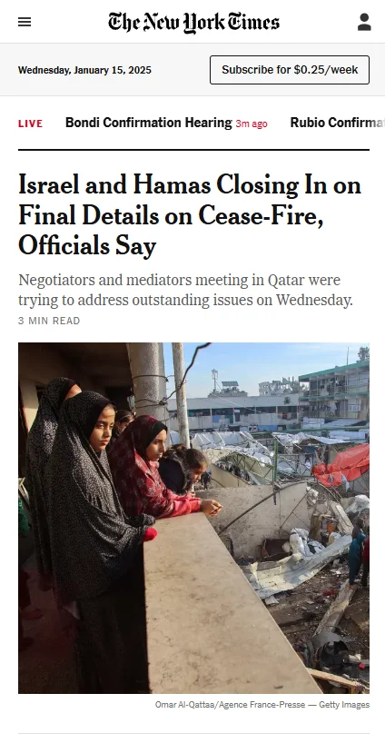
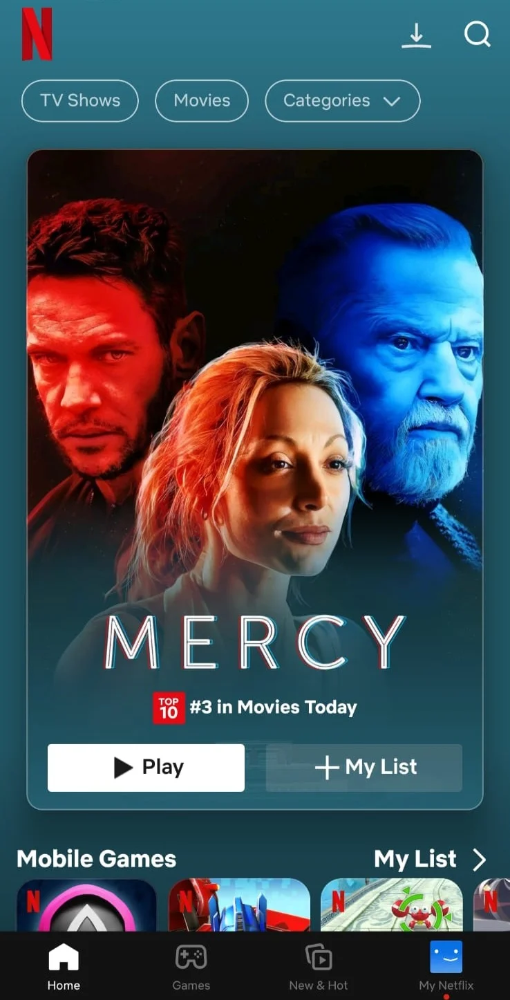
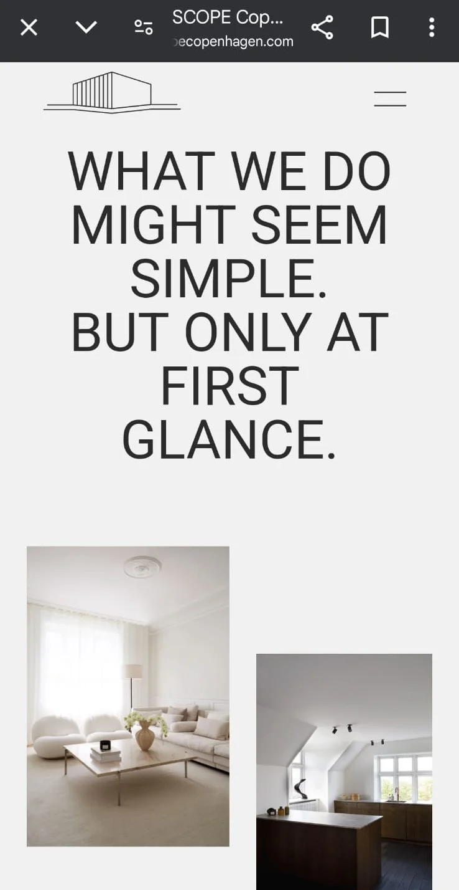

Visual Hierarchy
The New York Times
nytimes.com The New York Times homepage demonstrates a clear visual hierarchy that draws the reader's attention to key elements, resembling the printed version of the newspaper but in a more dynamic way. Key features include:
- Top Navigation/Masthead: Allows users to select categories like "News" or "Sports."
- Hero Section: Features a large image or video with a headline to highlight top stories.
- Other Headlines: Diverse stories, sometimes with accompanying images.
- Article Summaries: Brief summaries that complement headlines.
- Section Headings: Clearly distinguishable headings (e.g., "U.S.," "World," "Business").
- Color and Contrast: Conservative palette of black, gray, and white for readability.
- Whitespace: Effective use of whitespace to separate different elements.
- Font Size and Weight: Varying sizes and weights create a clear hierarchy.
In summary, the NYT homepage effectively organizes information with a well-defined visual hierarchy.
Fitt's Law
Netflix
netflix.com Fitts's Law states that people can navigate faster and more easily when targets are larger and closer. Netflix applies this principle in several ways:
- Large, Clickable Thumbnails: Big thumbnails reduce the time required to make selections.
- Prominent Play Buttons: Play buttons appear prominently when hovering over thumbnails.
- Row-Based Layout: Horizontal rows minimize navigation distance.
- "Next" and "Previous" Buttons: Large, edge-positioned buttons aid in navigation.
- Focus on Hover: Hovering reveals additional options, like "Add to My List."
By leveraging Fitts's Law, Netflix ensures quick and effortless navigation of its vast library.
Whitespace and Clean Design
Scope Copenhagen
scopecopenhagen.com Scope Copenhagen's website exemplifies the effective use of whitespace and clean design, creating a visually elegant experience. Specific elements include:
- Ample Use of Whitespace: Generous negative space separates content and enhances readability.
- Neutral Color Palette: Subtle tones create a calming and sophisticated appearance.
- Clear Visual Hierarchy: Thoughtful typography and spacing guide the user naturally.
- Minimalist Navigation Menu: A clean, simple menu prioritizes usability.
- High-Quality Imagery: Large images integrate seamlessly with whitespace to avoid visual clutter.
Scope Copenhagen's design goes beyond functionality, reflecting Scandinavian minimalism and elegance.